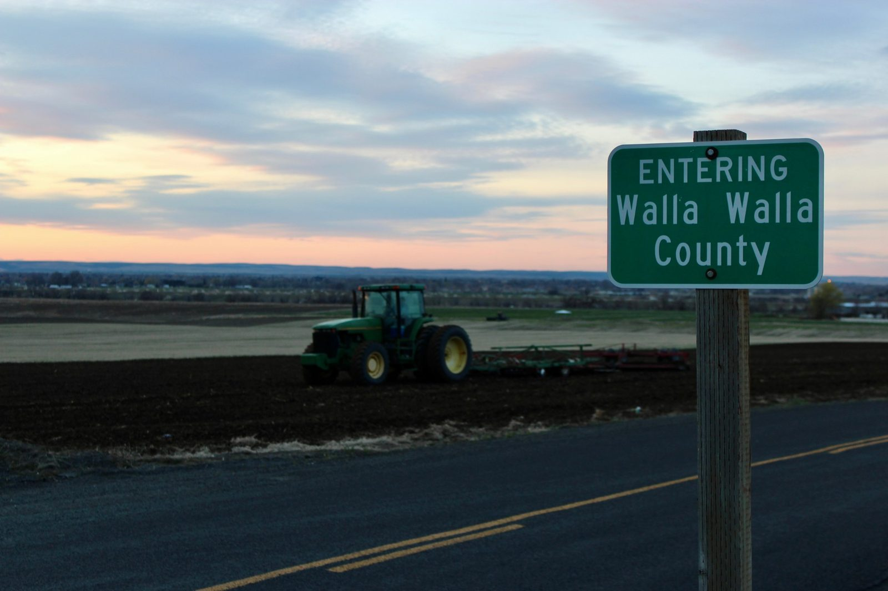

Is YOUR lot in the 100-ft creek buffer?

Check it in 30 seconds:
creekchecker.com
Type your Walla Walla address. See the proposed band on your lot. Then tell the City Council in one sentence.
Hearing Wed Oct 14, 6:30 pm, City Hall
15 N 3rd Ave, Walla Walla · City Council public hearing, Item 6E · vote scheduled Oct 28
Walla Walla's proposed Critical Areas Ordinance would widen creek buffers from 35 feet today (50 on Yellowhawk) to 100 feet, plus a 15-foot building setback. About 1,490 city lots are touched; 1,200 are homes.Built by residents of Walla Walla. Unofficial. Not legal advice.Written comments: CityClerk@wallawallawa.gov